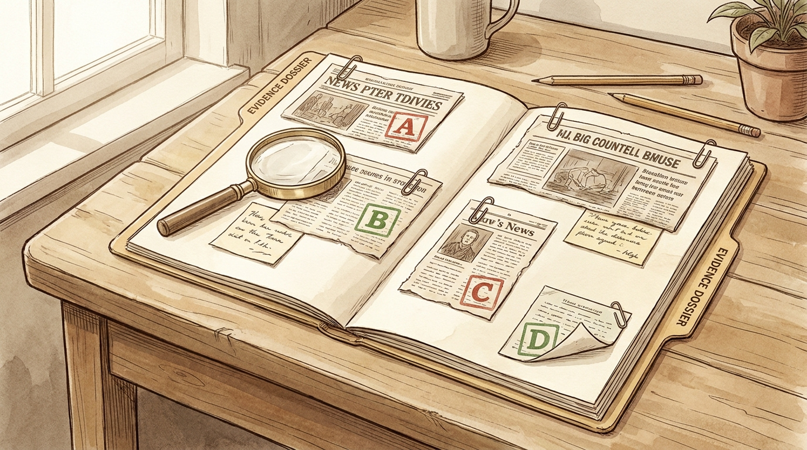
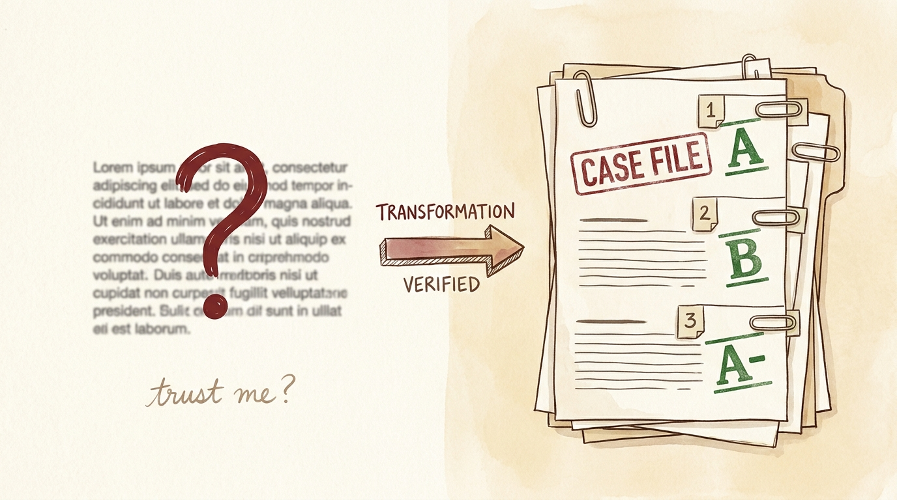
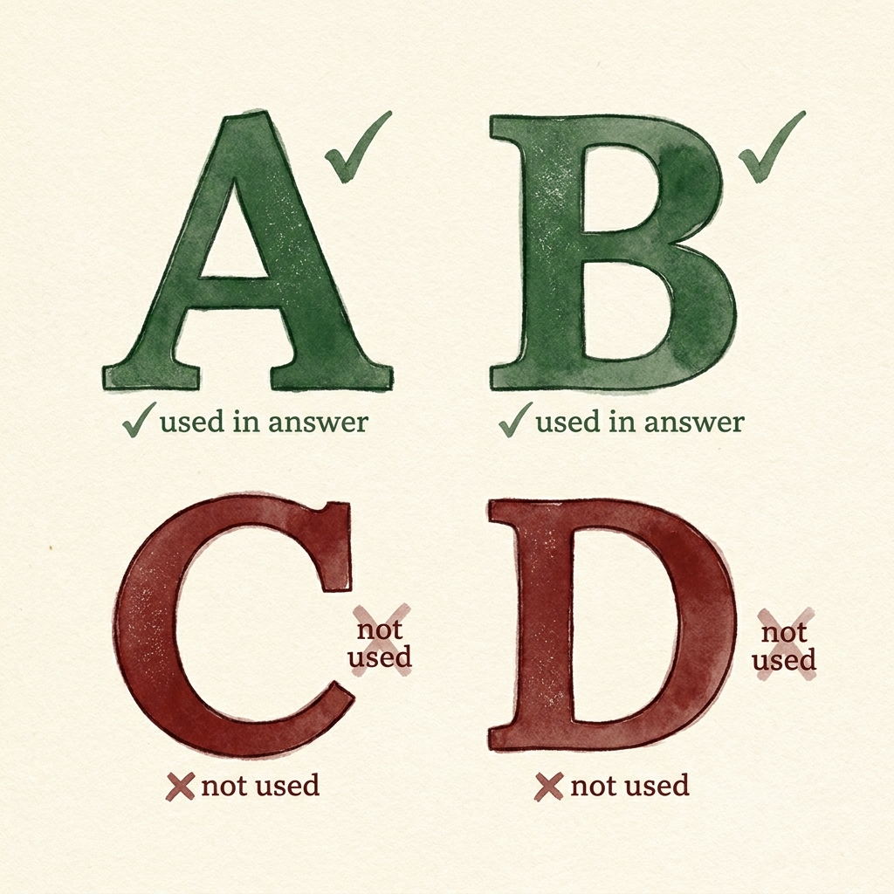
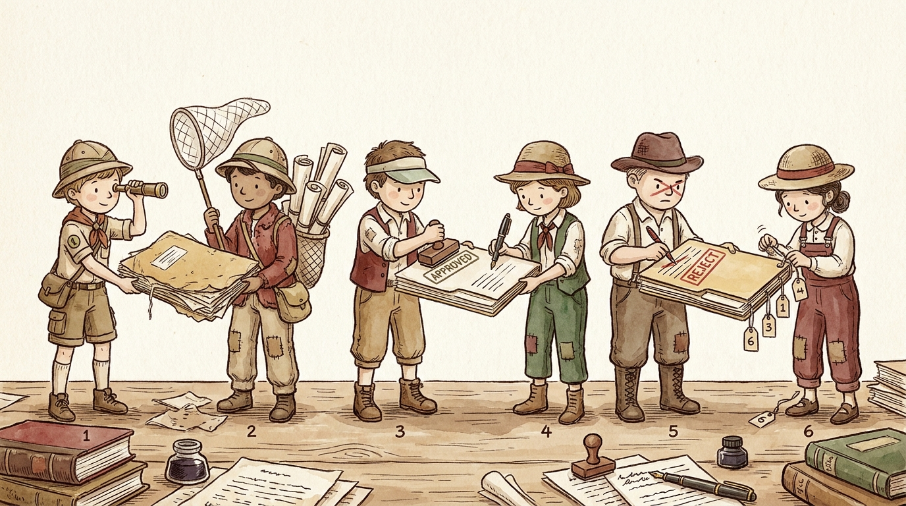

ruvnet · ruvn · an evidence-grading research agent
Stop trusting the
confident paragraph.
Get a graded dossier.
ruvn is a free AI research assistant that turns a question into a
graded, cited evidence dossier. It searches the web, gives every source a
letter grade for trustworthiness, writes its answer using only the
trustworthy ones, tries to prove itself wrong, and hands you a report where
every single claim has a receipt. It runs inside the AI you already have
— npm i -g @ruvnet/ruvn — and adds no model of its own.

01
Meet Dr. Priya — the “oh, that’s what it’s for” story
One real person, one real before → after.
Start here
Dr. Priya runs a small wellness studio. She’s heard clients ask about “40 Hz light-and-sound therapy” for focus and sleep, and she wants to know whether there’s real evidence before she says anything to anyone. She is not a scientist and she does not have time to read forty browser tabs. She already uses Claude Code — mostly for her booking spreadsheets — so the AI is right there on her laptop.
Before ruvn. She asks her normal AI chatbot, “Does 40 Hz light therapy actually help with sleep?” It hands her one smooth, confident paragraph. It sounds authoritative. But she has no idea whether that confidence came from a 2024 clinical trial or from a supplement-seller’s blog — they’re blended together with no labels. She can’t tell what to trust, can’t cite anything to a client, and can’t tell what’s hype. She’s stuck with a paragraph she can’t stand behind.
After ruvn. She installs it once
(npm i -g @ruvnet/ruvn, then ruvn init) and asks Claude Code
to run the ruvn research pipeline on the same question. Now it splits her question into
precise sub-questions, goes and finds the sources, grades each one A/B/C/D,
writes the findings using only the A’s and B’s, then
tries to prove each statement wrong and deletes anything it can’t back up,
and finally hands her a dossier where every claim has a numbered citation and
every source shows its grade. She gets a TL;DR, a cited body, and a graded
bibliography. She can see the strong claims rest on a graded-A 2024 paper and the weak
ones were thrown out. Now she can honestly tell a client, “here’s what the
good evidence says, and here’s what it doesn’t.”
Technical view — the same question, two very different paths
Friendly view — what it feels like for Priya
02
What problem it solves — the “confident blend” trap
What does it actually do? Why do I care?
When you ask a normal AI chatbot to “research” something, it blends good sources and bad sources into one confident paragraph — and you can’t tell which parts came from a peer-reviewed paper and which came from a random forum post. It sounds sure of itself either way. That’s the trap. The repo puts it bluntly: “Most ‘ask an AI’ research blends good and bad sources into one confident answer. ruvn refuses to.”
So, plainly:
- What does it actually do? It does disciplined research for you — finds sources, grades them, writes only from the trustworthy ones, fact-checks itself, and gives you a cited report instead of a confident guess.
- Why do I care? Because a confident-but-wrong answer is the most expensive kind. ruvn makes the AI show its work — you can see which claim came from which source, and how good that source is, at a glance. No more “trust me.”
- Why do I need it? Because the AI you already use doesn’t grade its sources by default — it just answers. ruvn bolts a grading-and-verification discipline onto the AI you already have, so “research” stops meaning “plausible paragraph” and starts meaning “evidence you can check.”
- Why is it important? Because the output is auditable. Every claim has a citation; every source has a grade. You — or a colleague, or a skeptic — can re-check it. That’s the difference between a vibe and a dossier.
Technical view — why a single blended answer hides the problem
Friendly view — from “trust me” to a checkable case file

03
The grading rubric — how a source earns its way into your answer
A, B, C, D — and only A and B are allowed in.
Here is the rule the whole tool turns on. The source-grader opens each source and stamps it A, B, C, or D for how much you can trust it. The synthesizer is then only allowed to write from the A and B sources — the C’s and D’s are not allowed in. And the fact-checker holds the bar higher still: a claim must be backed by one grade-A source or two grade-B sources, or it gets stripped out.
| Grade | What it means | Allowed in the answer? |
|---|---|---|
| A | Primary source (a real paper, an official doc), under ~2 years old, on-topic | ✓ Yes |
| B | Reputable secondary source (major outlet, named expert), under ~5 years | ✓ Yes |
| C | Tertiary (Wikipedia, a summary) — background only, not evidence | ✗ No |
| D | Discarded (forum post, unsourced claim, dead link) | ✗ No |
Technical view — the grading gate and the evidence threshold
Friendly view — the four grade stamps

04
How it works — six specialist helpers, in a line
A research process with checkpoints, not a single answer.
ruvn is a research process with checkpoints, not a single answer. It runs six specialist helpers in a line, and — this is the clever part — each helper only sees what the one before it produced, never the raw mess. So information is forced to pass through a grading gate and a fact-checking gate before it ever reaches you. In plain words:
- scout — breaks your big question into 3–7 precise little questions. “What exactly do we need to find out?”
- web-searcher — goes and finds raw sources for each little question; doesn’t judge yet, just collects. “Go find the sources.”
- source-grader — opens each source and stamps it A, B, C, or D for how much you can trust it. “Which of these can we actually trust?”
- synthesizer — writes the findings using only the A and B sources. The C’s and D’s are not allowed in. “Summarize — but only from the good stuff.”
- fact-checker — goes back and tries to disprove every claim; anything it can’t support gets deleted. “Try to prove each statement wrong, and cut what fails.”
- citer — final pass: attaches a numbered citation to every claim and builds the bibliography with the grades shown. “No claim ships without a receipt.”
What you get back: a Markdown dossier — a TL;DR up top, a body where every sentence is cited, and a bibliography with a letter grade next to each source.
Technical view — the pipeline, its hand-off contract, and the model tier of each agent
Friendly view — six little helpers passing the folder down the line

05
What “solved” looks like — the dossier on your screen
The exact thing you can hand a skeptic.
“Done” isn’t a chat reply — it’s a file. ruvn returns a ready-to-paste Markdown dossier with three parts you can actually point at: a TL;DR at the top, a cited body where every sentence carries a numbered receipt, and a graded bibliography where every source shows its A/B/C tag. The citer’s own rule is blunt: “the dossier must NOT contain any claim without a citation.”
Technical view — the anatomy of the dossier ruvn writes
Friendly view — the finished case file on the desk
06
“I already have Claude Code — why do I need ruvn too?”
The discipline layer, not another brain.
You almost certainly already have the AI host — Claude Code, Codex, Copilot. So let’s answer this head-on.
Claude Code is the brilliant generalist brain. Out of the box, when you say “research X,” it gives you one confident blended answer — it does not, by default, grade each source, refuse to use the weak ones, adversarially fact-check itself, and attach a citation to every claim. ruvn is the discipline layer that makes it do all of that, every time, in a fixed order.
And it doesn’t replace your AI — it rides inside it. ruvn ships no model of its own; the kernel “makes no model calls — your host provides the model.” You keep your same AI, your same login, your same bill. ruvn just adds the six-agent research pipeline and the grading rubric on top.
Before → after on your own question
| Plain AI chat | With ruvn | |
|---|---|---|
| Sources | Blended, unlabeled | Each graded A/B/C/D source-grader |
| What the answer is built from | Whatever it found | A & B sources only synthesizer |
| Self-checking | None by default | Adversarial fact-check; unsupported claims deleted fact-checker |
| Citations | Sometimes, inconsistently | Every claim cited or it doesn’t ship citer |
| What you can hand a skeptic | “Trust me” | An auditable dossier |
Technical view — ruvn is a thin discipline layer on the host you already run
Friendly view — same content, before and after the discipline
07
Use-case gallery — six real ways people use it
Open each card for its own picture, command, and result.
Every card below runs the same six-agent pipeline
(scout → web-searcher → source-grader → synthesizer →
fact-checker → citer). The variety is in the question and the audience —
not the machinery. Each opens to its own diagram.
1Check a health or wellness claim before you repeat it
2Decide between two options with real evidence (compare A vs B)
3Sanity-check a viral or scary claim (“does X cure Y?”)
4Build a cited brief for a report, post, or decision
5Wire research into your existing tools — whichever AI you use
6Automate research in CI (a dossier on every issue or comment)
contents: read posture — so research happens automatically on each issue, with safe defaults.
08
How to implement it — three commands
Now that you know why, here’s how.
Straight from the repo. Install once, wire it into your host, confirm it loaded:
Then, in Claude Code, ask it to run the research pipeline on your question — the
agents and the grading rubric in CLAUDE.md are now available to it.
Want to prove it against a live model first?
Set an OpenRouter key and run the validation — it exercises all 6 agents on a real sample question, and each must return a sensible, on-task answer.
What’s actually inside (the pieces you get)
- 6 agent definitions — each a plain prompt + model tier you can read
and tweak (
src/agents/*.ts). scout / grader / synth / fact-check / citer run on the sonnet tier; web-searcher runs on the cheaper haiku tier. - A tiny CLI —
init,doctor,--version(bin/cli.js). - Host config for 9 hosts — the
.claude/,.codex/,.vscode/,.opencode/,.openclaw/,.github/, plusAGENTS.md/SYSTEM.md/trust.json/cli-config.yaml/rvm.manifest.toml. - A real smoke test — boots the kernel + host adapter so a broken
install fails loudly (
__tests__/smoke.test.ts).
Technical view — what each command does to your project
ruvn init writes the host config and the CLAUDE.md gate into your project; ruvn doctor boots the adapter to confirm it loaded. Then you just ask your AI to run the pipeline.Friendly view — the six helpers are now on call
🎧
Prefer to listen? A 2-host audio overview — play it first
Rather not read? Press play. Or skim the written report.
We made an audio overview with NotebookLM — two hosts walk you
through ruvn end-to-end in plain language, starting from Dr. Priya’s story and
ending with the exact command to try. It’s the friendliest on-ramp if you’d
rather listen than read. There’s also a written report if you
prefer to skim. Both ride inside the drop-in zip
(for-humans/studio/) — not just here on the page.
09
The drop-in — one download, two halves
What’s actually inside the zip.
Beyond installing the tool, there’s a drop-in knowledge bundle: one
kb/ folder with two halves — one for you to read, one for
your AI to query against the real source. Here’s the actual file tree, every
file with a plain-English note on what it is:
@ruvector/rvf + the local embedder) — npm i and goThe 3-step drop-in
- Listen first (optional): open
for-humans/studio/and play 🎧 ruvn-audio-overview.m4a — a friendly two-host walkthrough of the whole tool. Prefer reading? Open 📄 ruvn-report.md. - Unzip
for-ai/into your project, thennpm i(two deps) and ask the brain a question:node ask-kb.mjs ruvn "how does the source-grader decide A vs B?" - Wire it into your AI host: add the 2-line
.mcp.jsonpointing atkb-mcp-server.mjs, and paste theCLAUDE.mdgate — now your AI answers from the real ruvn source, not from guesses.
for-humans/studio/ audio + report ride inside the zip, not just on this page.)
Friendly view — the bundle dropping into your laptop
⇩ Download the drop-in Smart Zip
Click or press Enter. Self-contained: the for-humans/studio/ audio overview + report ride inside.
10
Honest limits — what ruvn is not
Stated plainly, not hidden.
- Early beta — v0.1.1. This is a young, small package.
- It’s a research tool, not an oracle. It grades and cites evidence; it does not give medical advice or make efficacy claims. Its output is “a starting dossier to verify, not a conclusion.”
- It needs a host with web access. ruvn ships no model of its own — the kernel makes no model calls; your AI host provides the brain and the web-search tool. No host, no run.
- Quality is bounded by what’s findable and by the grader’s judgment. Grades are assigned by an AI applying the A/B/C/D rubric — solid, but not a human peer-reviewer. Treat the dossier as a strong first pass to verify.
- Domain DNA. It was built for the gamma-entrainment / ruv-neural project, so its built-in examples and validation tasks are 40 Hz-flavored. The pipeline is general; the examples just smell of its origin.
- “Signed session bundles” is the sibling tool’s job. That phrase in the one-liner belongs to ruv-neural (the closed-loop OS that runs / measures / signs protocols); ruvn is the research front-end. Don’t oversell ruvn as the protocol-signer.